snpdist<-as.data.frame(fread("PRJNA1230142_snpdists.tsv",header=F,sep="\t",col.names = c("acc1","acc2","snp_distance")))Module 7
Advanced data visualization with R
In this module, we will use R and ggplot to make more visualizations combining our analyses and metadata. Please check out the github page for the original research work these data are based on here: https://github.com/VishnuRaghuram94/SEPI. The visualizations we are about to make are all very similar.
Load libraries
library(dplyr)
library(data.table)
library(tidyverse)
library(ggplot2)
library(ggtree)
library(pheatmap)
library(phytools)
library(ggnewscale)
library(umap)Making a SNP distance heatmap
Read SNP distances
Lets use the fread command to read the SNP distances table.
fread will read your input as a data.table object, lets explicitly specify that we want it to be a data.frame object using as.data.frame
fread(header=F,col.names = c("acc1","acc2","snp_distance"): Our file doesn’t have a header so by default when it is read it will not have column names, but we can specify what we want the names of the columns to be using thecol.namesoption withinfreadas.data.frame(fread(...)): Here, nestedfreadinsideas.data.frame. This way, whateverfreadreads will automatically be passed toas.data.frame.snpdist<-: The output ofas.data.frameis saved tosnpdist
Converting the “molten” SNP distances table into a distance matrix
snpdist_matrix <- dcast(snpdist, acc1 ~ acc2, value.var = "snp_distance")
rownames(snpdist_matrix)<-snpdist_matrix$acc1
snpdist_matrix<-snpdist_matrix[,-1]dcast(snpdist,acc1~acc2, value.var="snp_dist"):The
dcastfunction can convert “long” data (our molten table) to “wide” data (matrix)acc1~acc2option is the “formula” to perform the cast, i.e which two columns should be usedvalue.varspecifies the column that should be used to fill in the values in each cell. Since our file only has 3 columns and we have usedacc1andacc2as the formula, thesnp_distcolumn will automatically be considered here. But if you have a table with more columns, you can specify using thevalue.varoption.snpdist_matrix <-: Save the resulting table tosnpdist_matrixrownames(snpdist_matrix)<-snpdist_matrix$acc1 ; snpdist_matrix<-snpdist_matrix[,-1]:A distance-matrix by definition can only have numeric values. Take a look at the
snpdist_matrixtable by clicking on it in the Environment tab. You will see that the first row has the accessions (specifically, the values that were originally in theacc1column)We specify using the
rownames()command that we wantsnpdist_matrix$acc1to be the rownamesThen we overwrite
snpdist_matrixwithsnpdist_matrix[,-1]. The data.frame notation isdataframe[rows,columns]. We specified-1as thecolumns- this means “all except column 1. This would remove theacc1column from the matrix, leaving us with only numeric values.
Visualizing a SNP-distance heatmap
Use the pheatmap function to output a heatmap of the SNP distance matrix we just constructed
pheatmap(snpdist_matrix)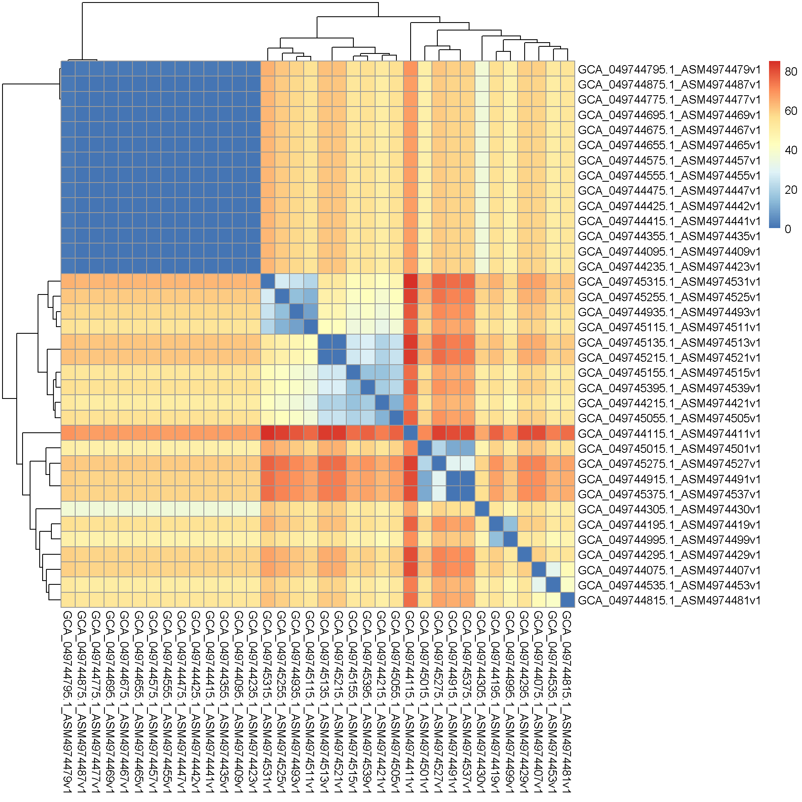
Adding metadata to the heatmap
Lets create a metadata table. Since we don’t actually have one, we will create a fake table in R for visualization purposes.
We will read in the MLST table and add a new column to it called “Country” where we will randomly assign the values “A”, “B” or “C” to each sample.
We will do this using a combination of the fread, mutate and sample functions, but we can do it all in one line with the help of piping and nesting functions.
metadata<-as.data.frame(fread("PRJNA1230142_mlst.tsv",select = c(1,3),col.names = c("accession","ST")) %>% mutate(Country = sample(c("A", "B", "C"), size = 36, replace = TRUE)))
rownames(metadata)<-metadata$accession
metadata$ST<-as.factor(metadata$ST)fread(...,select=c(1,3)): By using theselectoption infread, you can specify exactly which columns need to be read. Only the first and third columns are relevant from the MLST table so we can choose to read only those two.%>%: This is the pipe function in R, equivalent to|in bashfread(...) %>% mutate: This will pipe the output offread(the MLST table with 2 columns) to themutatefunction.mutate(Country = ...): We are creating a new column calledCountryin the table we just readsample(): This function will randomly sample values from a list provided. Our list isc("A","B","C")size=36, replace=T: We wantsampleto pick from the given list 36 times as we have 36 samples in our table and they all need to be assigned a random country. We usereplace=Tto “sample with replacement”, so its possible for the same “country” to be assigned to multiple samples.rownames(metadata)<-metadata$accession: Assigns theaccessioncolumn inmetadataas the rownames. This is so that the rownames of themetadatatable and thesnpdist_matrixtable are identical. This allowspheatmapto match the correct rows and columns across different tables.metadata$ST<-as.factor(metadata$ST): MLST types are usually numbers, which means R will read them as integers. But we know that MLST types are actually discrete factors and the number just represents a combination of alleles. It does not represent a continuous value, it is merely just an identifier. So we convert theSTcolumn into a factor usingas.factor
Now lets also add this metadata to the heatmap
pheatmap(snpdist_matrix,
annotation_row = metadata[c(2,3)])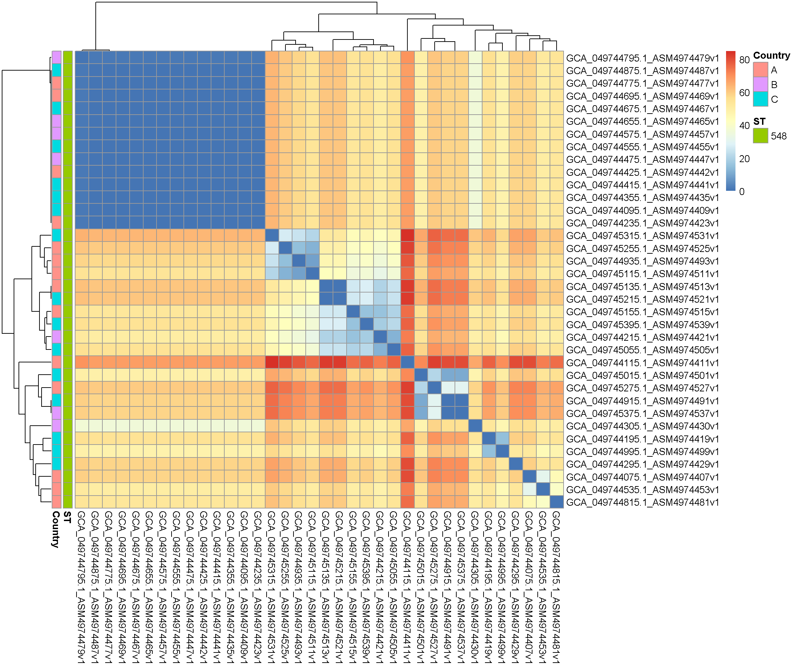
Now in addition to the distances, we have also displayed which country and what ST was assigned to each sample.
We can take this further by adding more custom options. Type ?pheatmap in the console and look at the different options available to you.
Add, remove or change values of some of these options and see how it changes the plot!
my_color<-list(Country= c(A = "#4CC3FF",B = "#FFFF00", C = "#FF2A00"), ST = c("548" = "grey"))
pheatmap(snpdist_matrix,
annotation_row = metadata[c(2,3)],
annotation_names_row = F,
annotation_col = metadata[c(2,3)],
annotation_names_col = F,
annotation_colors = my_color,
color = (c("#555555","#5B3794","#6E3A89","#74599C","#8085B8FF","#8DA3CAFF" ,"#A0BDD8FF" ,"#B7D5E4FF","#F1F1F1FF") ),
breaks = c(0,10,20,30,40,50,60,70,80),
legend_breaks = c(0,10,20,30,40,50,60,70,80),
display_numbers = T ,
number_format = "%d",
number_color = "black",
fontsize_number=8,
border_color = "white",
clustering_method = "average")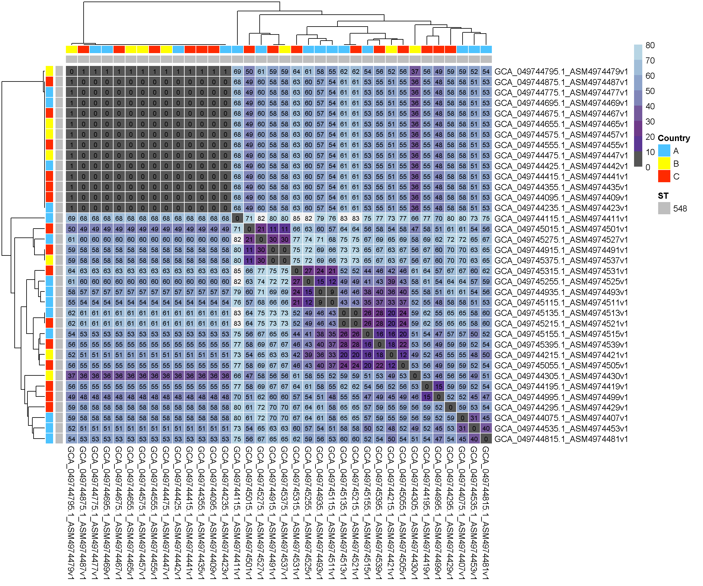
Visualize a tree using ggtree
The read.tree function in the ggtree package can be used to read in newick formatted trees Then use the ggtree function to visualize the tree
tree<-read.tree("PRJNA1230142_iqtree.nwk")
ggtree(tree)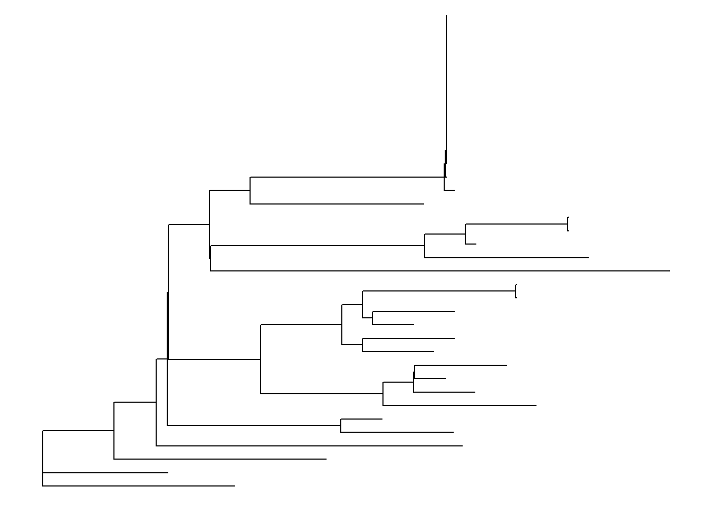
Try different layouts:
ggtree(tree,layout = "unrooted")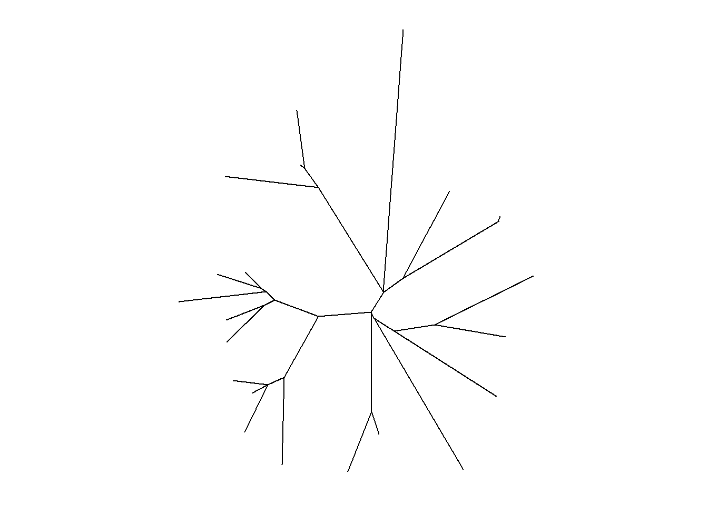
ggtree(tree,layout = "circular")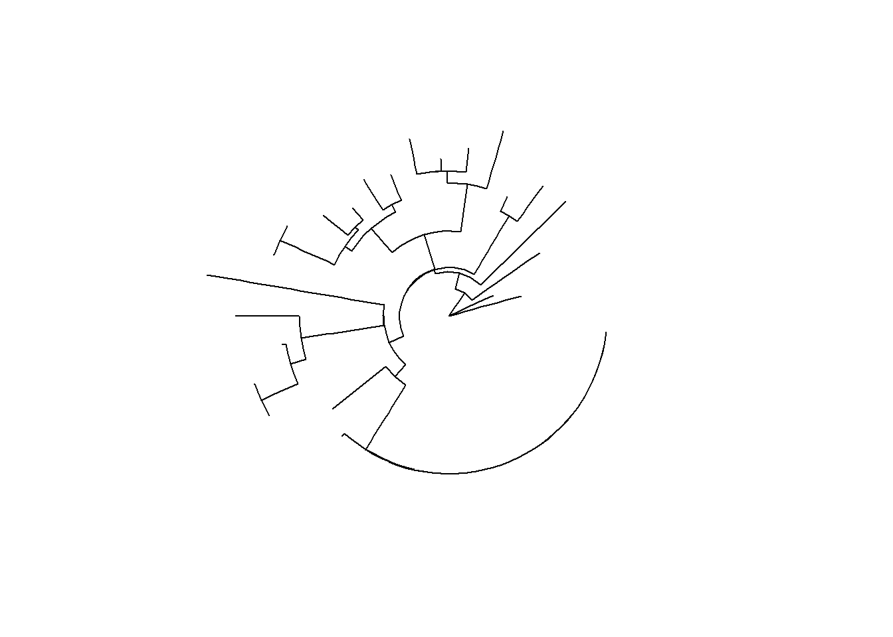
The most common layout for visualizing trees is the “rectangular” or “circular” layout. However, both of these are rooted layouts and currently our tree is unrooted.
Lets midpoint root our tree:
tree<-midpoint_root(tree)Midpoint rooting assumes that all your sequences have equal evolutionary rates. This is fine for visualization but not for any evolutionary inferences as this assumption is not true for most biological datasets.
Add tip labels and tip points:
ggtree(tree,layout = "rectangular")+
geom_tiplab(align = T)+ # set align to F and see what it looks like!
geom_tippoint()+
hexpand(.45, 1) # Adjust according to your plot size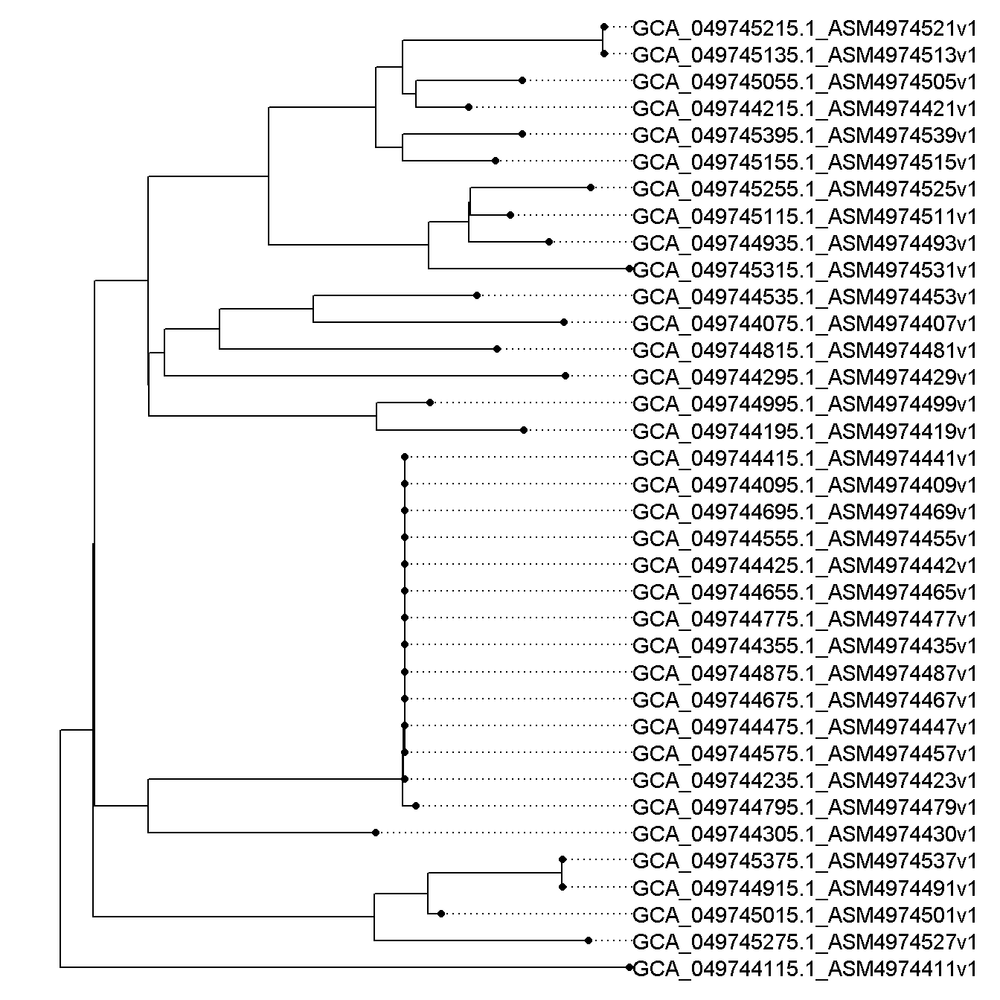
Adding metadata:
We can add the metadata table to ggtree using %<+% metadata , after this we follow the same ggplot rules by supplying the aes() option to colour tips based on the country.
ggtree(tree,layout = "rectangular") %<+% metadata +
geom_tiplab(align = T)+
geom_tippoint(aes(color=Country),size=3)+
hexpand(.6, 1)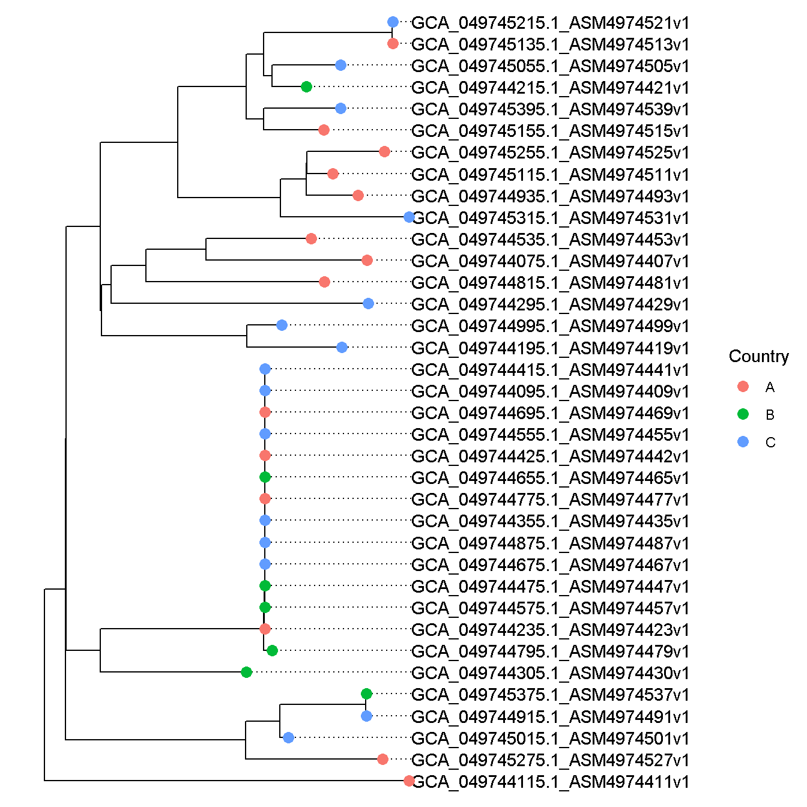
Instead of the tree tips, try colouring the tip labels by country
Click here to see the answer
ggtree(tree,layout = "rectangular") %<+% metadata +
geom_tiplab(aes(color=Country),align = T)+
geom_tippoint()+
hexpand(.6, 1)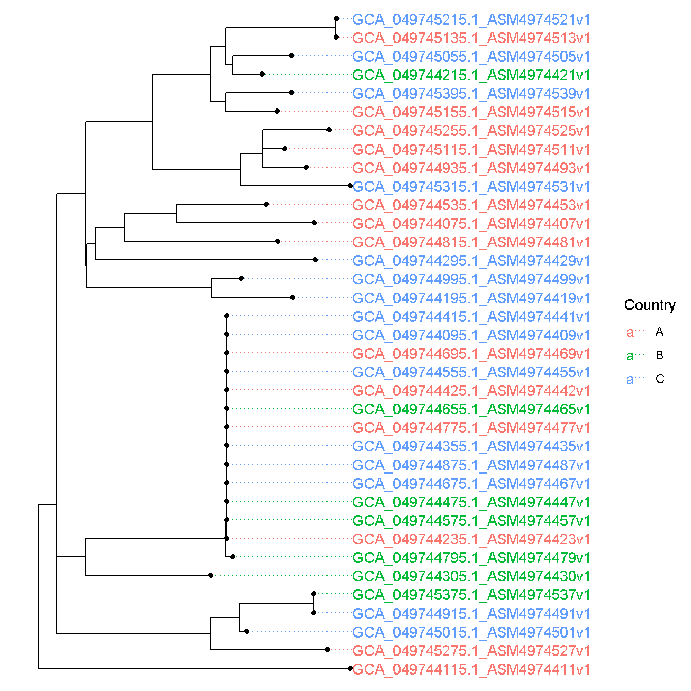
Combining the phylogenetic tree with other data
Lets read in the AmrFinder results
amrfinder<-as.data.frame(fread("PRJNA1230142_amrfinderplus.tsv",header=T,sep="\t",na.strings = "NA"))Lets filter this table to contain only AMR genes. We can do this by keeping only rows where the “ELEMENT TYPE” column has value “AMR”
Click here to see the answer
amrfinder<-amrfinder[amrfinder$`Element type`=="AMR",]We can now build an AMR gene presence absence matrix:
amrfinder_presabs_matrix<- amrfinder[,c(1,7)] %>%
distinct() %>%
mutate(present = "PRESENT") %>%
pivot_wider(names_from = `Gene symbol`, values_from = present, values_fill = "ABSENT")
amrfinder_presabs_matrix<-as.data.frame(amrfinder_presabs_matrix)
rownames(amrfinder_presabs_matrix)<-amrfinder_presabs_matrix$accession
amrfinder_presabs_matrix<-amrfinder_presabs_matrix[,-1]amrfinder[,c(1,12)]: select only column 1, 12distinct(): It is possible for the same AMR gene to be detected multiple times in the same genome. In this case, we don’t care how many times an AMR gene is detected, just that if it is detected or not. so we use thedistinct()function to keep only unique rows and remove duplicatesmutate(present = 1): Adding a column called ‘present’ with the value ‘1’ to all rows usingmutate()pivot_wider(names_from = `Gene symbol`, values_from = present, values_fill = "ABSENT"):pivot_wider: a function to convert long data to wide datanames_from: Values from this column will be used as column names in the resulting “wide” dataframe. We suppliedGene symbol- so each gene symbol in this column will become the column name for our new dataframevalues_from: Values from this column will be used as the corresponding values under each column name. All the values in the ‘present’ column are equal to “PRESENT”values_fill="ABSENT": Since not all samples will have all possible AMR genes, the wider dataframe will have some blank values, those will be replaced with “ABSENT”. This will give us a presence/absence matrix of AMR genes found in our genomes.
Visualize the tree along with the AMR gene presence/absence data
Use ?gheatmap to look at the different options and play around with them!
tree_viz<-ggtree(tree,layout = "rectangular") %<+% metadata +
geom_tippoint(aes(color=Country),size=3)+
hexpand(.6, 1)
gheatmap(tree_viz,amrfinder_presabs_matrix,colnames_angle = 90,colnames_offset_y = 0,hjust = 1,color = "grey50")+
scale_fill_manual("AMR gene",values=c("white","black"))+
vexpand(0.1,-1)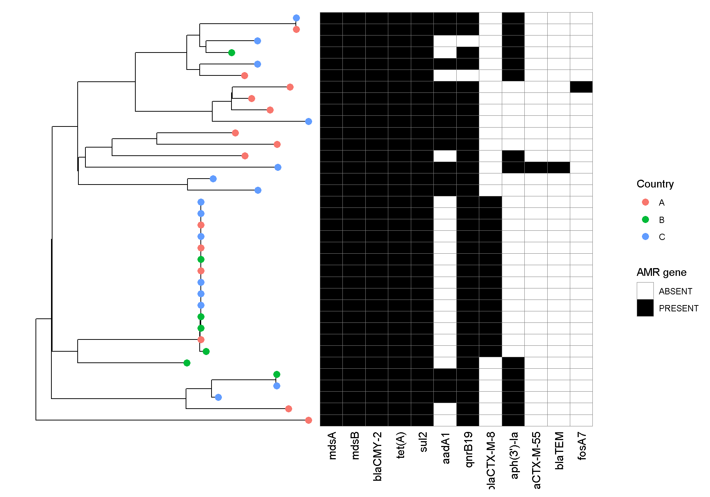
Creating visualizations from Pangenome data
Read in the gene presence absence table
panaroo_presabs<-fread("PRJNA1230142_panaroo.Rtab",header=T,sep="\t")Our presence/absence table has gene names as the first column and a 0 or 1 under each genome name to indicate presence or absence. We can use some basic functions in R to summarise these data for us :
gene_freq<-cbind(panaroo_presabs[,1],rowSums(panaroo_presabs[,-1]))
colnames(gene_freq)<-c("Gene","Freq")
gene_freq<-as.data.frame(gene_freq)panaroo_presabs[,1]: Takes only the first column, in this case only gene namesrowSums(panaroo_presabs[,-1]):panaroo_presabs[,-1]: Takes all except the first columnrowSums: Gets the sum of each row. In this case, that would add up all the 1s- This would tell us how many genomes the corresponding gene family is present in.
cbind(x,y): “Binds” columns of the inputs together. In this case,xispanaroo_presabs[,1]andyisrowSums(...)gene_freq<-: Write a new dataframe calledgene_freqwhere the number of genomes each gene family is present in is saved.colnames(gene_freq)<-c("Gene","Freq"): Assigns the names “Gene” and “Freq” to column 1 and column 2 of the newly createdgene_freqgene_freq<-as.data.frame(gene_freq): Explicitly declaringgene_freqto be a dataframe
Lets now create a new column called perc that has the percentage of genomes each gene is present in.
gene_freq$perc<-gene_freq$Freq*100/max(gene_freq$Freq)max(gene_freq$Freq): Gives the maximum value from a list of values. Our list of values is the columnFreq. The maximum values here will be the maximum amount of genomes a single gene can be present in (i.e 100% presence)gene_freq$Freq*100/max(gene_freq$Freq): Multipling each value inFreqby 100 and then dividing each value by themax- giving us the percentagegene_freq$perc<-: Writing the new list of percentage values to a new column ingene_freqcalledperc.
Now try visualizing the percentage of genomes each gene is present in as a histogram!
Click here to see the answer
ggplot(data=gene_freq)+geom_histogram(aes(x=perc))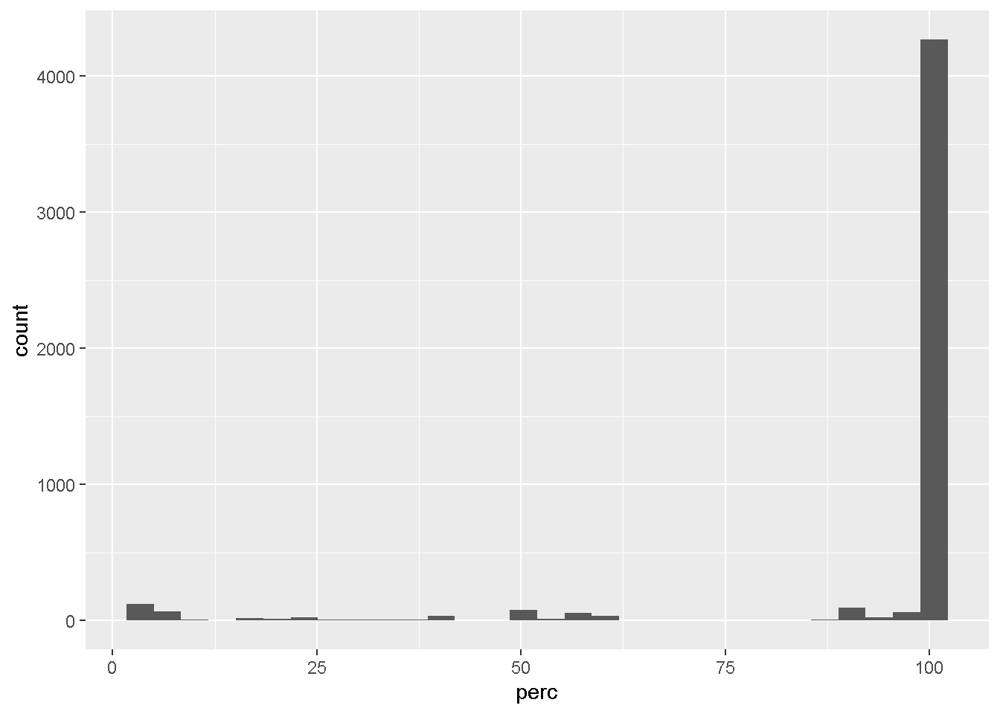
Now lets filter the gene presence absence table to remove core genes
panaroo_presabs_filtered<-panaroo_presabs[panaroo_presabs$Gene %in% gene_freq$Gene[gene_freq$perc<95]]
panaroo_presabs_filtered<-as.data.frame(panaroo_presabs_filtered)
rownames(panaroo_presabs_filtered)<-panaroo_presabs_filtered$Gene
panaroo_presabs_filtered<-panaroo_presabs_filtered[,-1]
panaroo_presabs_filtered_transposed<-as.data.frame(t(panaroo_presabs_filtered)) # TransposingEven after filtering, this table has over 600 genes. While it is possible to visualize them along side the tree like we did previously with AMRFinder data, the plot would appear too cluttered to visualize clearly.
In these cases, we can use dimensionality reduction methods.
Dimensionality reduction involves applying mathematical transformations to high dimensional data to convert them to low dimensional data.
In our case, we have the distribution of over 600 genes across 36 genomes. Using dimensionality reduction, we can represent this in 2 dimensions, where ideally genomes with similar gene presence/absence patterns should cluster together. Lets use a dimensionality reduction method called UMAP (Uniform Manifold AProximation)
set.seed(1000);umap_fit<-umap(panaroo_presabs_filtered_transposed)
umap_df <- as.data.frame(umap_fit$layout)
colnames(umap_df)<-c("umap1","umap2")
ggplot(data=umap_df,aes(x=umap1,y=umap2))+
geom_point()+
theme_void()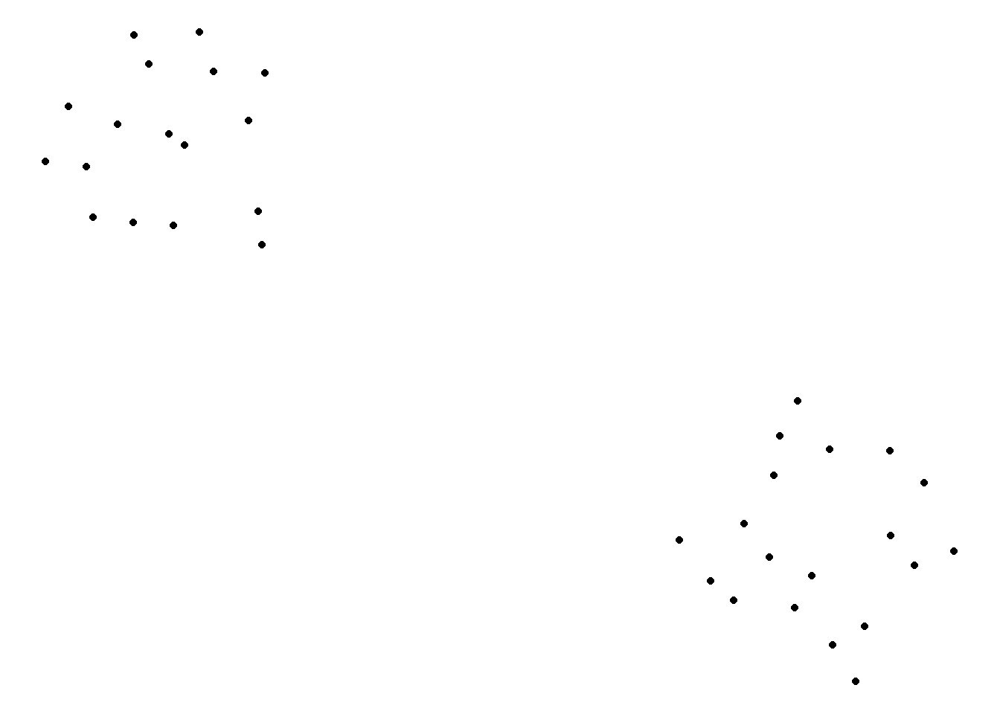
At first glance, it looks like our data fall into two distinct clusters! This suggests that there may be specific combinations of genes present in one cluster and absent in the other (and/or vice vers) and requires further investigation.
However, one has to be very careful while interpreting results from dimensionality reduction methods such as UMAP (or alternatively, PCoA, tSNE) as often times they tend to display structure in our data when there is none. Only use them as exploratory/visualization tools when you are working with high-dimension data and not as tools to make hard conclusions. Read more about UMAP here!
Sources and further reading:
ggtree Manual: https://guangchuangyu.github.io/software/ggtree/ PHeatmap tutorial: https://davetang.org/muse/2018/05/15/making-a-heatmap-in-r-with-the-pheatmap-package/ Panaroo manual: https://gthlab.au/panaroo/#/gettingstarted/quickstart Understanding UMAP: https://pair-code.github.io/understanding-umap/ Understanding tSNE: https://distill.pub/2016/misread-tsne/